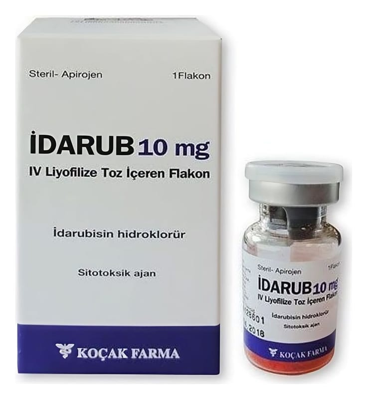

Idarub 10 mg IV Liyofilize Toz İçeren Flakon ,1 Adet

Ne için kullanılır
KT · Bölüm 1İDARUB toz halinde renksiz bir cam şişe içinde bulunmaktadır. Antrasiklin adı verilen gruba dahil bir ilaçtır. Bu grup ilaçlar kanser tedavisinde (kemoterapi) kullanılır. Her cam şişe, turuncu-kırmızı renkte görünümde etkin madde olarak 10 mg idarubisin
(idarubisin hidroklorür şeklinde) içerir. Her kutu bir adet cam şişe içermektedir. İDARUB lösemi tedavisinde kullanılmaktadır.